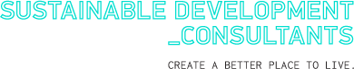
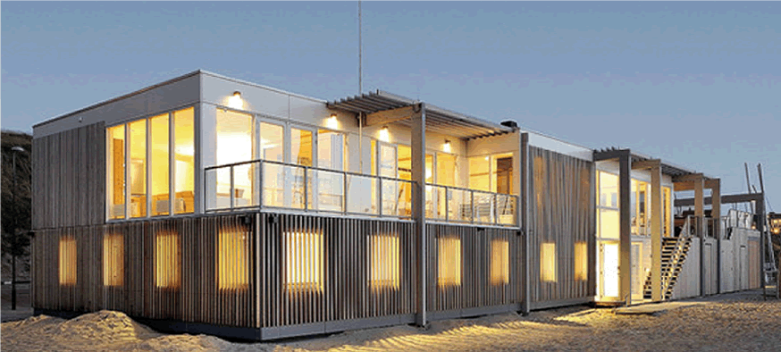

<!DOCTYPE html>
<!--[if lt IE 7]>
<html class="no-js lt-ie9 lt-ie8 lt-ie7"> <![endif]-->
<!--[if IE 7]>
<html class="no-js lt-ie9 lt-ie8"> <![endif]-->
<!--[if IE 8]>
<html class="no-js lt-ie9"> <![endif]-->
<!--[if gt IE 8]><!-->
<html class="no-js"> <!--<![endif]-->
<head>
    <meta charset="utf-8">
    <meta http-equiv="X-UA-Compatible" content="IE=edge,chrome=1">
    <title></title>
    <meta name="description" content="">
    <meta name="viewport" content="width=device-width">

    <!-- Place favicon.ico and apple-touch-icon.png in the root directory -->

    <link rel="stylesheet" href="css/normalize.css">
    <link rel="stylesheet" href="css/main.css">
    <script src="js/vendor/modernizr-2.6.2.min.js"></script>
</head>
<body>
<!--[if lt IE 7]>
<p class="chromeframe">You are using an <strong>outdated</strong> browser. Please <a href="http://browsehappy.com/">upgrade
    your browser</a> or <a href="http://www.google.com/chromeframe/?redirect=true">activate Google Chrome Frame</a> to
    improve your experience.</p>
<![endif]-->

<!-- Add your site or application content here -->
<header>
    <div class="header-top">
        <a href="index.html"></a>
        
    </div>
    <div class="header-box"></div>
</header>
<nav>
    <ul>
        <li><a href="index.html">Services & Capabilities</a></li>
        <li><a href="basic_page.html" class="selected">Our Vision</a></li>
        <li>Case Studies</li>
        <li>Our Team</li>
        <li>Accreditations</li>
        <li>Explorations & Developments</li>
        <li>Contact</li>
    </ul>
</nav>
<section class="content">
    <article class="basic-page">
        
        <h1>A world where vivamus viverra imperdiet vestibulum. aliquam ac ligula in diam scelerisque imperdiet. suspendisse sit amet quam a leo euismod.</h1>
        <div class="column-left"><p><b>Sustainable Development Consultants is an innovative and responsive ESD consultancy that provides sustainability consulting services with a broad focus upon the built environment.</b></p><p>

            The broad approach taken to sustainability at Sustainable Development Consultants has led us to become involved in a wide range of projects such as energy modeling for office buildings, commercial and residential building proposals, water management strategies, and sustainability management plans.</p><p>

            We provide consulting services to achieve compliance with many different environmental regulations, however we emphasise the abundant potential for "beyond-compliance" initiatives that can benefit the end-user, the client, and the environment. </p></div>
        <div class="column-right"><h2>Kviverra eros volutpat. Aenean porta ultrices libero.</h2><p>Morbi ut sem nec arcu pellentesque cursus eu ut purus. </p><p>Suspendisse potenti. Donec tortor erat, sollicitudin et consequat sit amet, laoreet sed nisi. Pellentesque velit mi, placerat vehicula convallis et, tempus pharetra sapien.</p><p> Integer augue mi, egestas eget consectetur viverra, adipiscing nec tortor. Ut a nisi et metus elementum mattis non sed metus. Maecenas non lectus eget neque tempor semper at a enim.</p> </div>
    </article>
</section>


<footer>
    <div class="company">
        <h8>Sustainable Development Consultants</h8>
        <p> © All images & content SDC 2013 | Designed by <a href="http://www.groszcolab.com.au">Grosz Co.Lab</a> Built
            by <a href="http://www.steeloctopus.co.uk">Steel Octopus</a></p></div>
    <div class="phone">T: (03) 9882 9967<br/>
        F: (03) 9882 9969 <br/><a href="mailto:info@sdconsultants.com.au">info@sdconsultants.com.au</a>
    </div>
    <div class="po-box">PO Box 478<br/>
        Camberwell VIC 3124
    </div>
    <div class="address">2nd Floor,<br/>555 Riversdale Rd.
    </div>
</footer>

<div class="clear"></div>

<script src="//ajax.googleapis.com/ajax/libs/jquery/1.9.1/jquery.min.js"></script>
<script>window.jQuery || document.write('<script src="js/vendor/jquery-1.9.1.min.js"><\/script>')</script>
<script src="js/plugins.js"></script>
<script src="js/main.js"></script>

<!-- Google Analytics: change UA-XXXXX-X to be your site's ID. -->
<script>
    var _gaq = [
        ['_setAccount', 'UA-XXXXX-X'],
        ['_trackPageview']
    ];
    (function (d, t) {
        var g = d.createElement(t), s = d.getElementsByTagName(t)[0];
        g.src = '//www.google-analytics.com/ga.js';
        s.parentNode.insertBefore(g, s)
    }(document, 'script'));
</script>
</body>
</html>
